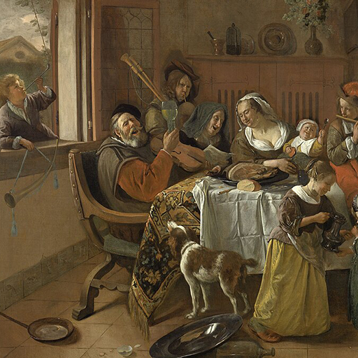

Hexagram 37 – Jiaren: A Warm Home
Upper: Wind (☴) · Lower: Fire (☲)

Core Meaning
Home is the starting point of every close relationship. Build belonging with warmth and clear boundaries. When care has structure, both home and outer life become steadier.
“I protect what I call home with warmth and clear principles.”
Blessing
May your home and closest relationships become a safe place of warmth and trust.
Guidance by Life Area
Love
Warmth brings closeness; boundaries bring safety. Show care in practical ways while protecting what matters to you.
Turn care into time and practical support:
- Hold important boundaries with kindness.
- Remember you are on the same side.
Career
Treat the team like a healthy household: offer support, but keep roles and rules clear. Belonging grows when expectations are known.
Create a supportive culture with clear rules:
- Give everyone belonging and boundaries.
- Care for the team consistently.
Health
Household routines shape health. Improve meals, sleep, and daily rhythm for yourself and those you live with.
Improve meals and routines at home:
- Build a steady daily rhythm.
- Let health become a shared priority.
Finances
Stable family finances require shared rules. Discuss income, spending, and goals openly, then follow a simple budget together.
Discuss household money and goals openly:
- Follow a shared budget.
- Let money support the home, not divide it.
Relationships
Put your energy into places where you feel accepted. Nurture your core circle and become someone others can rely on.
Invest in places where you are accepted:
- Be dependable to others.
- Let warmth strengthen belonging.